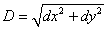
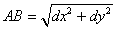
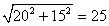

Distance between two points (given their coordinates)
Given the
coordinates
of two points, the distance D between the points is given by:

where dx is the difference between the x-coordinates of the points
and dy is the difference between the y-coordinates of the points
Try this
Drag the point A or B. As you drag, the length of the line segment linking them is continuously recalculated.
The formula above can be used to find the distance between two points when you know the
coordinates of the points
.
This distance is also the length of the
line segment
linking the two points.
This formula is simply a use of
Pythagoras' Theorem.
In the figure above, click 'reset' and the "Show Triangle" checkbox. As you can see, the line segment AB is the
hypotenuse
of a right triangle,
where one side is dx - the difference in x-coordinates, and the other is dy - the difference in y-coordinates.
From
Pythagoras' Theorem.
we know that
AB2 = dx2 + dy2
Solving this for AB gives us the formula:

Vertical and horizontal lines
If the line segment is exactly vertical or horizontal, the formula above will still work fine, but there is an easier way.
For a horizontal line, its length is the difference between the x-coordinates.
For a vertical line its length is the difference between the y-coordinates.
In the figure above make a vertical and horizontal line and verify this for yourself.
Example
- In the figure above, press 'reset'.
- Calculate dx, the difference in the points x-coordinates. Since A is at (15,20) its x-coordinate is the first number or 15.
The x-coordinate of B is 35. So the difference (dx) is 20.
- Calculate dy, the difference in the points y-coordinates. Since A is at (15,20) its y-coordinate is the second number or 20.
The y-coordinate of B is 5. So the difference (dy) is 15.
- Plugging these into the formula we get

Things to try
In the figure at the top of the page, first press 'reset'.
If you prefer it, you can drag the origin into any corner to display just one quadrant.
- Drag the points A and B around and note how the distance between them is calculated.
- Drag the points to create an exactly horizontal line between them. This is a simple case
where the distance is just the difference in x-coordinates. The formula will still work though if you prefer.
- Drag the points to create an exactly vertical line between them. This is another simple case
where the distance is just the difference in y-coordinates. The formula will still work though if you prefer
A practical application
Every interactive program used on this web site makes extensive use of
coordinate geometry.
The screen you are looking at is a grid of thousands of tiny dots called pixels that together make up the image.
(With a powerful lens you can actually see them).
Each pixel is addressed using its x,y coordinates. Each pixel has a unique pair of coordinates.
In case you find it interesting, here is the program code used extensively on this site to find the distance
between two pixels (points) on the screen.
It is written in the JavaScript language. It returns the distance between two supplied points p and q.
function distance(p, q)
{ var dx = p.x - q.x;
var dy = p.y - q.y;
var dist = Math.sqrt( dx*dx + dy*dy );
return dist;
}
Expressions like p.x mean "the x coordinate of p".
It uses the exact same method as described on this page, which in turn makes use of Pythagoras' Theorem.
So as you can see, all this geometry you are learning really does have a practical use.
Limitations
In the interest of clarity in the applet above, the coordinates are rounded off to integers and the lengths rounded to one decimal place.
This can cause calculatioons to be slightly off.
For more see
Teaching Notes
Other Coordinate Geometry topics
(C) 2011 Copyright Math Open Reference.
All rights reserved